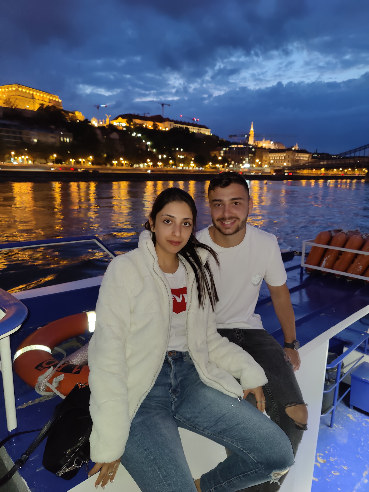

ABOUT ME
My name is Ofir Adato, I'm 23 years old, I was born and leaving until now in Holon.
I'm honorably discharged from the military at 11/19.
I'm spendind my life with my girlfriend Linoy Cochavi.

My first job after the military was in a company named "BRINKS" as a technician of ATM machine.
For these days i'm working in a company named "ONE-TALDOR" as a level A technician of ATM machine and computer hardware,
And studying quality assurance in a "QA MASTERS COLLEGE"